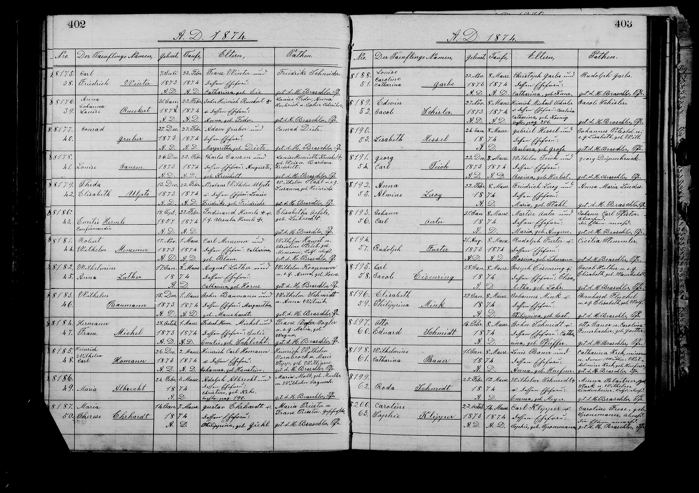

★ At a Glance
CHILD 5 of 7 · LATER "LOUISE FOSTER" FS LZXC-DFNCharles and Auguste's fifth child. She lived to seventy-four, married into the Foster family, and was known to her family simply as Louise.
Louise Jansen (b. 26 December 1873, d. 1947 at age 74) was the fifth-born child of Charles & Auguste — later known as Louise Johnson, then "Louise Foster" after marriage. Charles's 1898 pension declaration lists her as "Louise Foster, born December 1873." Christened 22 February 1874 at St. Marcus with sponsors Louise Henriette Kreichelt née Weis (her grandmother and namesake) and Barbara "Babette" Kreichelt (her aunt, then age 13). Surname now rendered Jansen — the first appearance of the J-form spelling, marking the start of the German→Anglicization drift toward "Johnson."
Vital details
| Name as baptized | Louise Jansen |
| American name (later) | Louise Johnson · "Louise Foster" (married) |
| Surname spelling | Jansen |
| Born | 26 December 1873, St. Louis, Missouri |
| Baptized | 22 February 1874, St. Marcus Evangelical Church, St. Louis |
| St. Marcus register | Baptism Records, p. 402, no. 8178 |
| Pension reference | "Louise Foster, born December 1873" — listed in Charles's 1898 pension declaration |
| Died | 1947, age 74 |
| FamilySearch profile | LZXC-DFN |
| Birth order | 5 of 7 children |
| Parents | Charles Jansen (Charles Konzen / Gannsen / Johnson) & Auguste Kreichelt |
Family tree
Baptism record & sponsors
St. Marcus Baptism Doc J — page 402, entry no. 8178
Name: Louise Jansen
Born: 26 December 1873
Baptized: 22 February 1874
Parents: Charles Jansen and Auguste Kreichelt

Baptism sponsors
- SponsorLouise Henriette Kreichelt, née Weis — Auguste's mother; Charles's mother-in-law; born Clausthal 1820. The 1873 parish clerk uses her full formal name Louise Henriette Kreichelt née Weis — the same person recorded simply as "Henriette Kreichelt" at the 1866 firstborn baptism and as "Louise Kreichelt" at the 1872 baptism. The child Louise Gansen is named directly after her grandmother — the "Louise" component of Louise Friederike Henriette Weiss. She was 53 at this baptism. This is her second Gannsen sponsor appearance (after the 1866 firstborn), making her one of only two recurring sponsors across the seven-baptism series. · FamilySearch LZXC-NG7
- SponsorBarbara Kreichelt — Auguste's youngest sister Bertha Barbara "Babette" Kreichelt, then age 13. Earlier transcriptions on this site identified her as a "sister-in-law" — but the FamilySearch tree confirms she is Auguste's blood sister, the eighth and last child of Georg and Henriette. She would sponsor again in 1880 at Bertha Johnson's baptism (this time recorded as "Babette") — and that 1880 child is named directly after her. She was 13 at this baptism, on the young end of German-Lutheran sponsor age, paired here with her 53-year-old mother as junior co-sponsor. · FamilySearch L5FH-BRP
Both sponsors are immediate Kreichelt family — Auguste's mother and her youngest sister. This is one of the simplest sponsor pools across the seven baptisms. From the 2020 research journal, Doc J; the "Barbara/Babette = Bertha Barbara" reconciliation confirmed via the FamilySearch tree person L5FH-BRP's documented Alternate Name "Babette" (May 2026).
📂 Surname-spelling research note
Surname-spelling note
This is the first appearance of the "Jansen" spelling in the family record, and the most J-leaning of the renderings. The surname drift sequence: Gonnson (1866) → Gonnson (1868) → Gansen (1870) → Gonsen (1872) → Jansen (1874) → Konsen (1875) → Jansen (1881). Same family, five distinct surnames in fifteen years.
Sources & cross-references
- FamilySearch · Louise Johnson (LZXC-DFN)
- 2020 AncestryProGenealogists Journal · Doc J
- St. Marcus Evangelical Church (St. Louis), Baptism Records, p. 402, no. 8178; FHL Microfilm 1503034
- U.S. Civil War Pension Case File 684507 (1898 declaration listing "Louise Foster")
- → Charles in America (main site)